Seeing the value of reaching a goal is often much easier than seeing a way to reach that goal. People often resolve to somehow improve themselves or their lives. But while they are not lacking sincerity, determination, or effort, they nevertheless fall short for want of a plan, a map, a picture of why and how to get from here to there.
Pro forma financial statements provide a look at the potential results of financial decisions. They can also be used as a tool to plan for certain results. When projected in the form of a budgetA projection of the financial requirements and consequences of a plan., figures become not only an estimated result but also an actual strategy or plan, a map illustrating a path to achieve a goal. Later, when you compare actual results to the original plan, you can see how shortfalls or successes can point to future strategies.
Budgets are usually created with a specific goal in mind: to cut living expenses, to increase savings, or to save for a specific purpose such as education or retirement. While the need to do such things may be brought into sharper focus by the financial statements, the budget provides an actual plan for doing so. It is more a document of action than of reflection.
As an action statement, a budget is meant to be dynamic, a reconciliation of “facts on the ground” and “castles in the air.” While financial statements are summaries of historic reality, that is, of all that has already happened and is “sunk,” budgets reflect the current realities that define the next choices. A budget should never be merely followed but should constantly be revised to reflect new information.
The budget process is an infinite loop similar to the larger financial planning process. It involves
Figure 5.2 The Budget Process
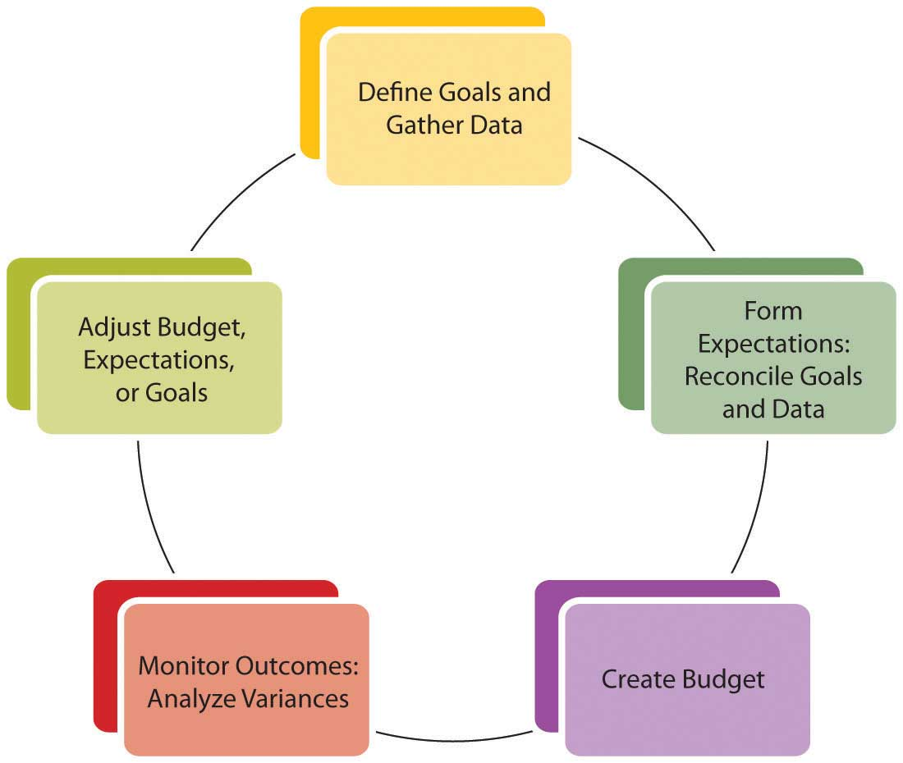A review of your financial statements or your current financial condition—as well as your own ideas about how you are and could be living—should indicate immediate and longer-term goals. It may also point out new choices. For example, an immediate goal may be to lower housing expense. In the short-term you could look for an apartment with lower rent, but in the long run, it may be more advantageous to own a home. This long-term goal may indicate a need to start a savings plan for a down payment.
The process of creating a budget can be instructive. Creating a budget involves projecting realistic behavior. Your assumptions may come from your actual past behavior based on accurate records that you have gathered. If you have been using personal finance software, it has been keeping those records for you; if not, a thorough review of your checkbook and investment statements will reveal that information. Financial statements are useful summaries of the information you need to create a budget.
After formulating realistic expectations based on past behavior and current circumstances, you still must reconcile your future behavior with your original expectations. For example, you may recognize that greater sacrifices need to be made, or that you must change your behavior, or even that your goals are unattainable and should be more realistic—perhaps based on less desirable choices. On the other hand, this can be a process of happy discovery: goals may be closer or require less sacrifice than you may have thought.
Whether it results in sobering dismay or ambitious joy, the budget process is one of reconciling your financial realities to your financial dreams. How you finance your life determines how you can live your life, so budgeting is really a process of mapping out a life strategy. You may find it difficult to separate the emotional and financial aspects of your goals, but the more successfully you can do so, the more successfully you will reach your goals.
A budget is a projection of how things should work out, but there is always some uncertainty. If the actual results are better than expected, if incomes are more or expenses less, expectations can be adjusted upward as a welcome accommodation to good fortune. On the other hand, if actual results are worse than expected, if incomes are less or expenses more, not only the next budget but also current living choices may have to be adjusted to accommodate that situation. Those new choices are less than preferred or you would have chosen them in your original plan.
To avoid unwelcome adjustments, you should be conservativeIn finance, an approach preferred in all financial planning: overestimate expenses, losses, and the value of liabilities and underestimate incomes, gains, and the value of assets. This is based on the idea that any surprises should be advantageous. The use of this word in finance and accounting has absolutely no relation to any political associations that the word may have gained in common usage. in your expectations so as to maximize the probability that your actual results will be better than expected. Thus, when estimating, you would always underestimate the income items and potential gains and overestimate the expense items and potential losses.
You will also need to determine a time period and frequency for your budget process: annually, monthly, or weekly. The timing will depend on how much financial activity you have and how much discipline or guidance you want your budget to provide. You should assess your progress at least annually. In general, you want to keep a manageable amount of data for any one period, so the more financial activity you have, the shorter your budget period should be. Since your budget needs to be monitored consistently, you don’t want to be flooded with so much data that monitoring becomes too daunting a task. On the other hand, you want to choose an ample period or time frame to show meaningful results. Choose a time period that makes sense for your quantity of data or level of financial activity.
Budgets should be prepared conservatively:
The appropriate time period is one that is
Gathering data and creating a budget—with some goals already in mind—are the initial steps in the process. Understanding the format or shape of the budget will help guide you to the kind of information you need. A comprehensive budgetA budget that includes the operating budget and the capital budget, that is, it is designed to show all aspects of financial activities.—that is, a budget covering all aspects of financial life—will include a projection of recurring incomes and expenses and of nonrecurring expenditures. (Nonrecurring income or “windfalls” should not be counted on or “budgeted for,” conservatively.) Recurring incomes would be earnings from wages, interest, or dividends. Recurring expenditures may include living expenses, loan repayments, and regular savings or investment deposits. Nonrecurring expenditures may be for capital improvements such as a new roof for your house or for purchases of durable items such as a refrigerator or a car. These are purchases that would not be made each period. A comprehensive budget diagram is shown in Figure 5.4 "Comprehensive Budget Diagram".
Figure 5.4 Comprehensive Budget Diagram
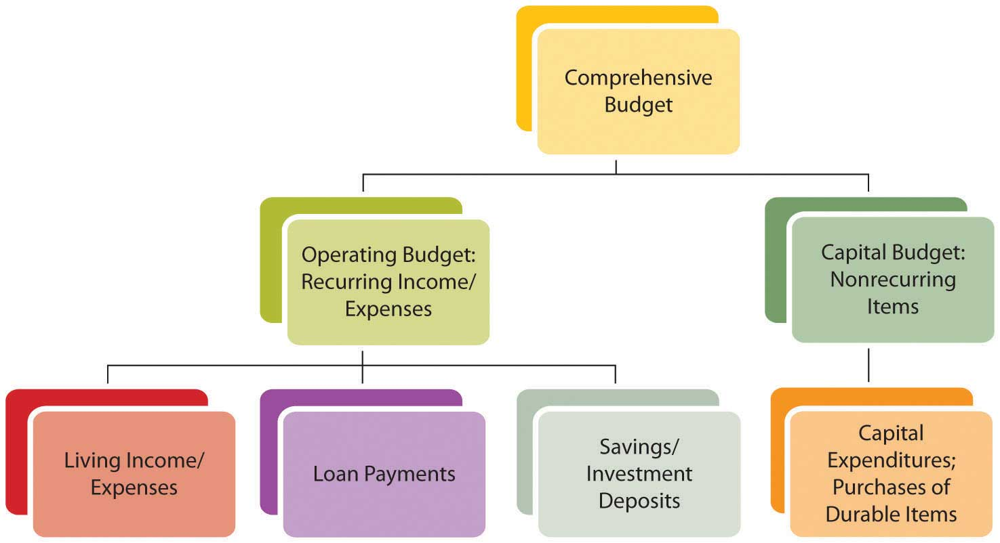Another distinction in recognizing recurring and nonrecurring items is the time frame for each. Recurring items need to be taken care of repeatedly and are therefore considered in the short term, while the items on the capital budget may allow for long-term planning because they happen less frequently. The different time horizons for planning for recurring and nonrecurring items may allow for different strategies to reach those different goals.
A comprehensive budget is a compilation of an operating budgetThe budget the shows recurring income and expenses, usually living expenses and incomes from wages, interest, and dividends, usually related to short-term financial goals. for short-term goals involving recurring items and a capital budgetThe budget that shows nonrecurring events that are usually associated with long-term financial goals. for long-term goals involving nonrecurring items.
Recurring incomes and expenditures are usually the easiest to determine and project, as they happen consistently and have an immediate effect on your everyday living. An income statement shows incomes and expenses; cash flow statements show actual cash expenditures. Recurring incomes and expenditures are planned in the context of short-term lifestyle goals or preferences.
Look at a time period large enough to capture relevant data. Some incomes and expenditures recur reliably but only periodically or seasonally. For example, you may pay the premium on your auto insurance policy twice per year. It is a recurring expense, but it happens in only two months of the year, so you would have to look at expenditures over enough months to see it. Or your heating or cooling expenses may change seasonally, affecting your utility expenses in some months more than in others.
The time period you choose for a budget should be long enough to show intermittent items as recurring and nonrecurring items as unusual, yet small enough to follow and to manage choices within the period. For personal budgets, a month is the most common budget period to use, since most living expenses are paid at least monthly. However, it is best to use at least one full year’s worth of data to get a reasonable monthly average and to see seasonal and periodic items as they occur.
Some items may recur, but not reliably: either their frequency or their amount is uncertain. Taking a conservative approach, you should include the maximum possible amount of uncertain expenses in your budget. If income occurs regularly but the amount is uncertain, conservatively include the minimum amount. If income actually happens irregularly, it may be better just to leave it out of your budget—and your plans—since you can’t “count” on it.
Consider the following example: Mark works as a school counselor, tutors on the side, does house painting in the summer, and buys and sells sports memorabilia on the Internet. In 2006, he bought an older house with a $200,000, fixed-rate mortgage at 5.75 percent. Every year, he deposits $1,000 into his retirement account and uses some capital for home improvements. He used a car loan to buy his car. Whatever cash is left over after he has paid his bills is saved in a money market account that earns 3 percent interest. At the end of 2009, Mark is trying to draw up a budget for 2010. Since he bought the house, he has been keeping pretty good financial records, shown in Figure 5.5 "Mark’s Financial Data, 2006–2009".
Mark has five sources of income—some more constant, some more reliable, and some more seasonal. His counseling job provides a steady, year-round paycheck. House painting is a seasonal although fairly reliable source of income; in 2008 it was less because Mark fell from a ladder and was unable to paint for two months. Tutoring is a seasonal source of income, and since the school hired an additional counselor in 2008, it has decreased. Memorabilia trading is a year-round but unpredictable source of income. In 2009 he made some very lucrative trades, but in 2007 almost none. Interest income depends on the balance in the money market account. He would include his counseling, painting, and interest incomes in his budget, but should be conservative about including his tutoring or trading incomes.
Mark’s expenses are reliable and easily predictable, with a few exceptions. His accident in 2008 increased his medical expenses for that year. Both gas for the car and heating expense vary with the weather and the highly volatile price of oil; in 2008 those expenses were unusually high. Property tax increased in 2009 but is unlikely to do so again for several years.
Figure 5.5 Mark’s Financial Data, 2006–2009
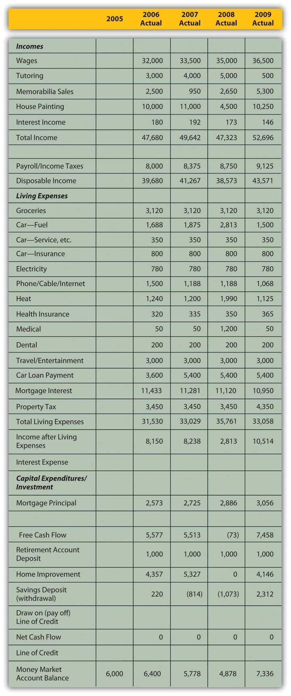Along with your known financial history, you would want to include any new information that may change your expectations. As with any forecast, the more information you can include in your projections, the more accurate it is likely to be.
Mark knows that the hiring of a new counselor has significantly cut into his tutoring income and will likely continue to do so. He will get a modest raise in his wages, but has been notified that the co-pays and deductibles on his medical and dental insurance will increase in 2010. He has just traded in his car and gotten a new loan for a “new” used car.
The personal or micro characteristics of your situation influence your expectations, especially if they are expected to change. Personal factors such as family structure, health, career choice, and age have significant influence on financial choices and goals. If any of those factors is expected to change, your financial situation should be expected to change as well, and that expectation should be included in your budget projections.
For example, if you are expecting to increase or decrease the size of your family or household, that would affect your consumption of goods and services. If you anticipate a change of job or of career, that will affect your income from wages. A change in health may result in working more or less and thus changing income from wages. There are many ways that personal circumstances can change, and they can change your financial expectations, choices, and goals. All these projected changes need to be included in the budget process.
Macro factors affecting your budget come from the context of the wider economy, so understanding how incomes and expenses are created is useful in forming estimates. Incomes are created when labor or capital (liquidity or assets) is sold. The amount of income created depends on the quantity sold and on the price.
The price of labor depends on the relative supply and demand for labor reflected in unemployment rates. The price of liquidity depends on the relative supply and demand for capital reflected in interest rates. Unemployment rates and interest rates in turn depend on the complex, dynamic economy.
The economy tends to behave cyclically. If the economy is in a period of contraction or recession, demand for labor is lower, competition among workers is higher, and wages cannot be expected to rise. As unemployment rises, especially if you are working in an industry that is cyclically contracting with the economy, wages may become unreliable or increasingly risky if there is risk of losing your job. Interest rates are, as a rule, more volatile and thus more difficult to predict, but generally tend to fall during a period of contraction and rise in a period of expansion. A budget period is usually short so that economic factors will not vary widely enough to affect projections over that brief period. Still, those economic factors should inform your estimates of potential income.
Expenses are created when a quantity of goods or services is consumed for a price. That price depends on the relative supply of and demand for those goods and services and also on the larger context of price levels in the economy. If inflation or deflation is decreasing or increasing the value of our currency, then its purchasing power is changing and so is the real cost of expenses. Again, as a rule, the budget period should be short enough so that changes in purchasing power won’t affect the budget too much; still, these changes should not be ignored. Price levels are much quicker to change than wage levels, so it is quite possible to have a rise in prices before a rise in wages, which decreases the real purchasing power of your paycheck.
If you have a variable rate loan—that is, a loan for which the interest rate may be adjusted periodically—you are susceptible to interest rate volatility. (This is discussed at length in Chapter 16 "Owning Bonds".) You should be aware of that particular macro factor when creating your budget.
Macroeconomic factors are difficult to predict, as they reflect complex scenarios, but news about current and expected economic conditions is easily available in the media every day. A good financial planner will also be keeping a sharp eye on economic indicators and forecasts. You will have a pretty concrete idea of where the economy is in its cycles and how that affects you just by seeing how your paycheck meets your living expenses (e.g., filling up your car with gas or shopping for groceries). Figure 5.7 "Factors for Determining a Projected Operating Budget Item" suggests how personal history, microeconomic factors, and macroeconomic factors can be used to make projections about items in your budget.
Figure 5.7 Factors for Determining a Projected Operating Budget Item
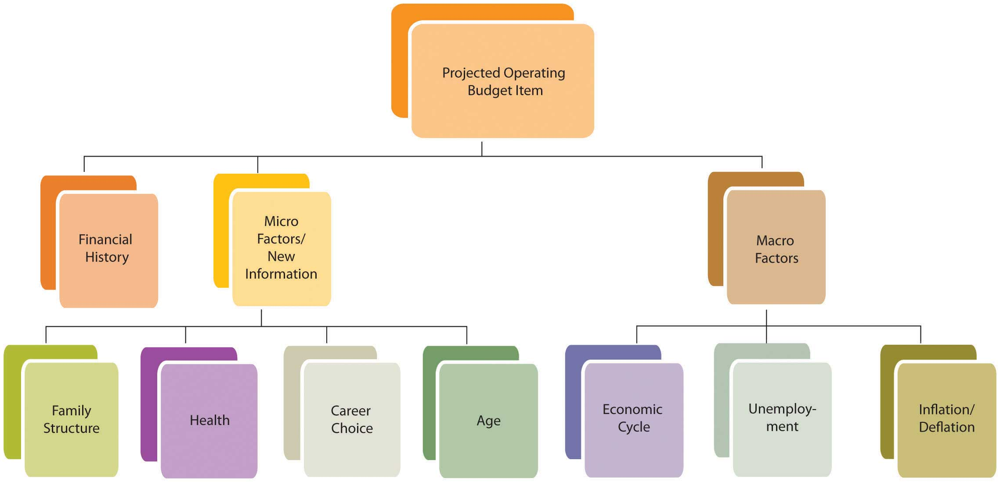Using his past history, current information, and understanding of current and expected macroeconomic factors, Mark has put together the budget shown in Figure 5.8 "Mark’s 2010 Budget".
To project incomes, Mark relied on his newest information to estimate his wages and tutoring income. He used the minimum income from the past four years for memorabilia sales, which is conservative and reasonable given its volatility. His painting income is less volatile, so his estimate is an average, excluding the unusual year of his accident. Interest income is based on his current money market account balance, which is adjusted for an expected drop in interest rates.
Mark expects his expenses to be what they were in 2009, since his costs and consumption are not expected to change. However, he has adjusted his medical and dental insurance and his car lease payments on the basis of his new knowledge.
The price of gas and heating oil has been extraordinarily volatile during this period (2006–2009), affecting Mark’s gas and heating expense, so he bases his estimates on what he knows about his expected consumption and the price. He knows he drives an average of about 15,000 miles per year and that his car gets about 20 miles per gallon. He estimates his gas expense for 2010 by guessing that since oil price levels are about where they were in 2007, gas will cost, on average, what it did then, which was $2.50 per gallon. He will buy, on average, 750 gallons per year (15,000 miles ÷ 20 mpg), so his total expense will be $1,875. Mark also knows that he uses 500 gallons of heating oil each year. Estimating heating oil prices at 2007 levels, his cost will be about the same as it was then, or $1,200.
Mark knows that the more knowledge and information he can bring to bear, the more accurate and useful his estimates are likely to be.
Figure 5.8 Mark’s 2010 Budget
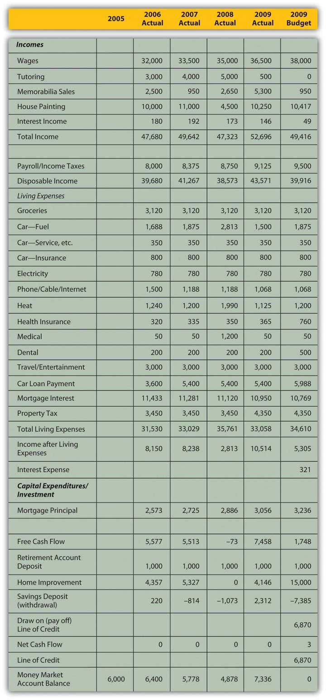Income remaining after the deduction of living expenses and debt obligations, or free cash flowIncome remaining after the deduction of living expenses and debt obligations that is available for capital expenditures or investment., is cash available for capital expenditures or investment. Capital expenditures are usually part of a long-term plan of building an asset base. Investment may also be part of a longer-term plan to build an asset base or to achieve a specific goal such as financing education or retirement.
Long-term strategies are based on expected changes to the micro factors that shape goals. For example, you want to save for retirement because you anticipate aging and not being as willing or able to sell labor. Expanding or shrinking the family structure may create new savings goals or a change in housing needs that will indicate a change in asset base (e.g., buying or selling a house).
Some changes will eliminate a specific goal. A child finishing college, for example, ends the need for education savings. Some changes will emphasize the necessity of a goal, such as a decline in health underscoring the need to save for retirement. As personal factors change, you should reassess your longer-term goals and the capital expenditure toward those goals because long-term goals and thus capital expenditures may change with them.
While many personal factors are relatively predictable over the long-term (e.g., you will get older, not younger), the macroeconomic factors that will occur simultaneously are much harder to predict. Will the economy be expanding or contracting when you retire? Will there be inflation or deflation? The further (in time) you are from your goals, the harder it is to predict those factors and the less relevant they are to your budgeting concerns. As you get closer to your goals, macro factors become more influential in the assessment of your goals and your progress toward them.
Since long-term strategies happen over time, you should use the relationships between time and value to calculate capital expenditures and progress toward long-term goals. Long-term goals are often best reached by a progression of steady and even steps; for example, a saving goal is often reached by a series of regular and steady deposits. Those regular deposits form an annuity. Knowing how much time there is and how much compounding there can be to turn your account balance (the present value of this annuity) into your savings goal (its future value), you can calculate the amount of the deposits into the account. This can then be compared to your projected free cash flow to see if such a deposit is possible. You can also see if your goal is too modest or too ambitious and should be adjusted in terms of the time to reach a goal or the rate at which you do.
Capital expenditures may be a one-time investment, like a new roof. A capital expenditure may also be a step toward a long-term goal, like an annual savings deposit. That goal should be assessed with each budget, and that “step” or capital expenditure should be reviewed. Figure 5.10 "Factors for Determining the Projected Capital Budget Item" shows the relationship of factors used to determine the capital budget.
Figure 5.10 Factors for Determining the Projected Capital Budget Item
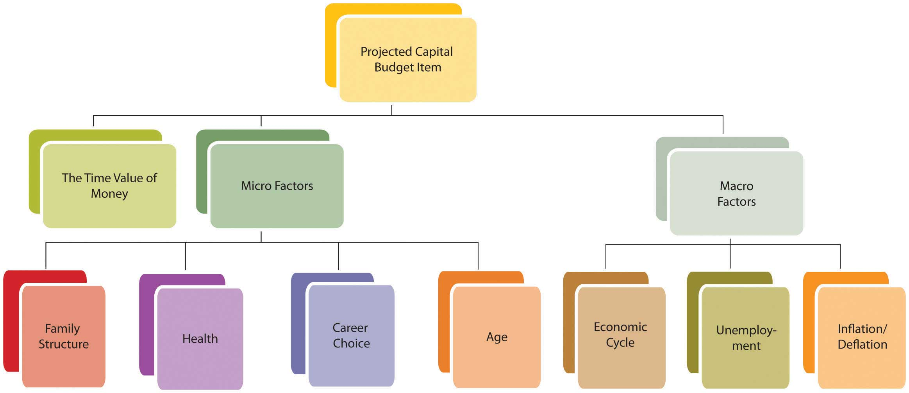Mark’s 2010 budget (shown in Figure 5.8 "Mark’s 2010 Budget") projects a drop in income and disposable income, and a rise in living expenses, leaving him with less free cash flow for capital expenditures or investments. He knows that his house needs a new roof (estimated cost = $15,000) and was hoping to have that done in 2010. However, that capital expenditure would create negative net cash flow, even if he also uses the savings from his money market account. Mark’s budget shows that both his short-term lifestyle preferences (projected income and expenses) and progress toward his longer-term goals (property improvement and savings) cannot be achieved without some changes and choices. What should those changes and choices be?
Recurring incomes and expenses
Projecting recurring incomes and expenses involves using
Projecting capital expenditures involves using the following:
When cash flows are not periodic, that is, when they are affected by seasonality or a different frequency than the budgetary period, a closer look at cash flow management can be helpful. Although cash flows may be adequate to support expenses for the whole year, there may be timing differences. Cash flows from income may be less frequent than cash flows for expenses, for example, or may be seasonal while expenses are more regular. Most expenses must be paid on a monthly basis, and if some income cash flows occur less frequently or only seasonally, there is a risk of running out of cash in a specific month. For cash flows, timing is everything.
A good management tool is the cash budget, which is a rearrangement of budget items to show each month in detail. Irregular cash flows can be placed in the specific months when they will occur, allowing you to see the effects of cash flow timing more clearly. Mark’s cash budget for 2010 is in the spreadsheet shown in Figure 5.11 "Mark’s Cash Budget".
Figure 5.11 Mark’s Cash Budget
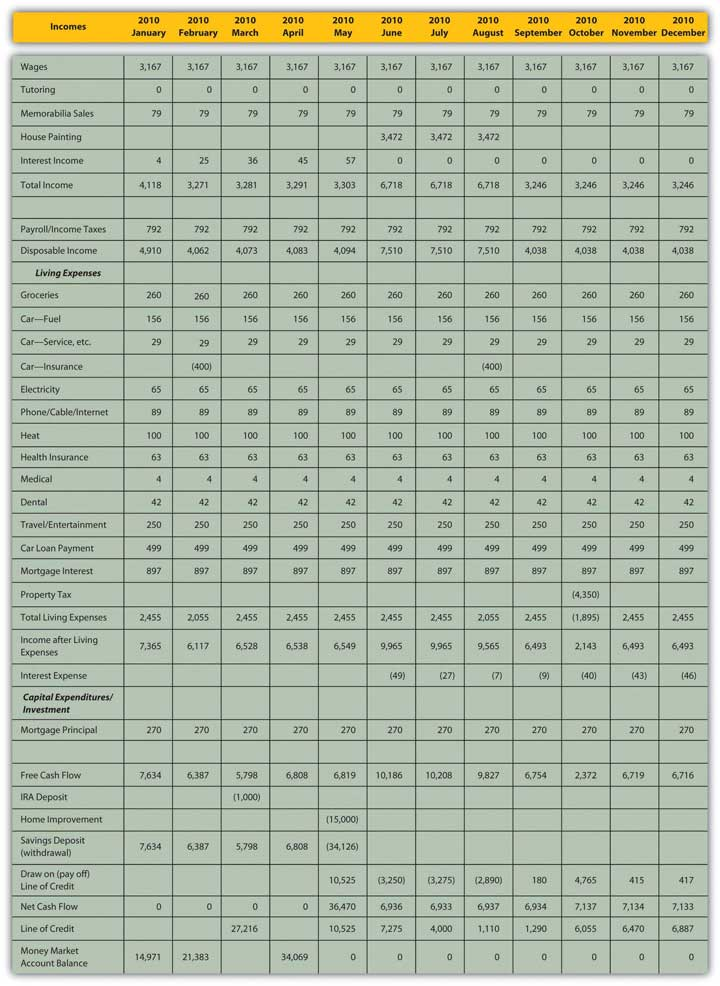Mark’s original annual budget (Figure 5.8 "Mark’s 2010 Budget") shows that although his income is enough to cover his living expenses, it does not produce enough cash to support his capital expenditures, specifically, to fix the roof. In fact, his cash flow would fall short by about $6,870, even after he uses the cash from his savings (the money market account). If he must make the capital expenditure this year, he can finance it with a line of creditA loan structured such that money can be borrowed as needed, up to a limit, and paid down as desired, and interest is paid regularly but only on the outstanding balance.: a loan where money can be borrowed as needed, up to a limit, and paid down as desired, and interest is paid only on the outstanding balance. Using the line of credit, Mark would create an extra $321 of interest expense for the year.
The cash budget (Figure 5.11 "Mark’s Cash Budget") shows a more detailed and slightly different story. Because of Mark’s seasonal incomes, if he has the roof fixed in May, he will need to borrow $10,525 in May (before he has income from painting). Then he can pay that balance down until October, when he will need to extend it again to pay his property tax. By the end of the year, his outstanding debt will be a bit more than originally shown, with an ending balance of $6,887. But his total interest expense will be a bit less—only $221—as the loan balance (and therefore the interest expense) will be less in some of the months that he has the loan.
The cash (monthly) budget shows a different story than the annual budget because of the seasonal nature of Mark’s incomes. Since he is planning the capital expenditures before he begins to earn income from painting, he actually has to borrow more—and assume more risk—than originally indicated.
The cash budget may show risks but also remedies that otherwise may not be apparent. In Mark’s case, it is clear that the capital expenditure cannot be financed without some external source of capital, most likely a line of credit. He would have to pay interest on that loan, creating an additional expense. That expense would be in proportion to the amount borrowed and the time it is borrowed for. In his original plan the capital expenditure occurred in May, and Mark would have had to borrow about $10,525, paying interest for the next seven months of the year. Delaying the capital expenditure until October, however, would cost him less, because he would have to borrow less and would be paying interest in fewer months. An alternative cash budget illustrating this scenario is shown in Figure 5.12 "Mark’s Alternative Cash Budget".
Figure 5.12 Mark’s Alternative Cash Budget
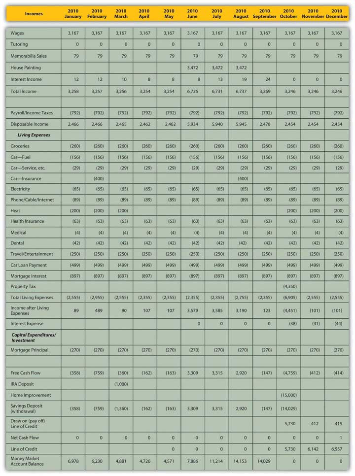Delaying the capital expenditure until October would also allow the money market account to build value—Mark’s seasonal income would be deposited during the summer—which would finance more of the capital expenditure. He could borrow less, ending the year about $6,557 short, and his interest expense would be only $123, because he has borrowed less and because he can wait until October to borrow, thus paying interest for only three months of the year.
Timing matters for cash flows because you need to get cash before you spend it, but also because time affects value, so it is always better to have liquidity sooner and hang onto it longer. A cash budget provides a much more detailed look at these timing issues, and the risks—and opportunities—of cash management that you may otherwise have missed.
A cash flow budget is a budget that projects a specific aspect of your finances, that is, the cash flows. Other kinds of specialized budgetsA budget that focuses on one particular financial asset, actvity, or goal. focus on one particular financial aspect or goal. A specialized budget is ultimately included in the comprehensive budget, as it is a part of total financial activity. It usually reflects one particular activity in more detail, such as the effect of owning and maintaining a particular asset or of pursuing a particular activity. You create a budget for that asset or that activity by segregating its incomes and expenses from your comprehensive budget. It is possible to create such a focused budget only if you can identify and separate its financial activity from the rest of your financial life. If so, you may want to track an activity separately that is directly related to a specific goal.
For example, suppose you decide to take up weekend backpacking as a recreational activity. You are going to try it for two years, and then decide if you want to continue. Aside from assessing the enjoyment that it gives you, you want to be able to assess its impact on your finances. Typically, weekend backpacking requires specialized equipment and clothing, travel to a hiking trail access or campground, and perhaps lodging and meals: capital investment (in the equipment) and then recurring expenses. You may want to create a separate budget for your backpacking investment and expenses in order to assess the value of this new recreational activity.
One common type of specialized budget is a tax budgetA budget that focuses on the tax consequences of projected financial activities., including activities—incomes, expenses, gains, and losses—that have direct tax consequences. A tax budget can be useful in planning for or anticipating an event that will have significant tax consequences—for example, income from self-employment; the sale of a long-term asset such as a stock portfolio, business, or real estate; or a gift of significant wealth or the settling of an estate.
While it can be valuable to isolate and identify the effects of a specific activity or the progress toward a specific goal, that activity or that goal is ultimately just a part of your larger financial picture. Specialized budgets need to remain a part of your comprehensive financial planning.
The cash flow budget is an alternative format used as a cash management tool that provides
A budget varianceA difference between the actual results of your financial activity and your expected, budgeted results. occurs when the actual results of your financial activity differ from your budgeted projections. Since your expectations were based on knowledge from your financial history, micro- and macroeconomic factors, and new information, if there is a variance, it is because your estimate was inaccurate or because one or more of those factors changed unexpectedly. If your estimate was inaccurate—perhaps you had overlooked or ignored a factor—knowing that can help you improve. If one or more of those factors has changed unexpectedly, then identifying the cause of the variance creates new information with which to better assess your situation. At the very least, variances will alert you to the need for adjustments to your budget and to the appropriate choices.
Once you have created a budget, your financial life continues. As actual data replace projections, you must monitor the budget compared to your actual activities so that you will notice any serious variances or deviations from the expected outcomes detailed in the budget. Your analysis and understanding of variances constitute new information for adjusting your current behavior, preparing the next budget, or perhaps realistically reassessing your behavior or original goals.
The sooner you notice a budget variance, the sooner you can analyze it and, if necessary, adjust for it. The sooner you correct the variance, the less it costs. For example, perhaps you have had a little trouble living within your means, so you have created a budget to help you do so. You have worked out a plan so that total expenses are just as much as total income. In your original budget you expected to have a certain expense for putting gas in your car, which you figured by knowing the mileage that you drive and the current price of gas. You are following your budget and going along just fine. Suddenly, the price of gas goes way up. So does your monthly expense. That means you’ll have to
In the short term, monitoring your gas expense alerts you to a need to change your financial behavior by driving less, spending less on other things, or earning more. In the long run, if you find this increased expense intolerable, you will make other choices as well to avoid it. Perhaps you would buy a more fuel-efficient car, for example, or change your lifestyle to necessitate less driving. The number and feasibility of your choices will depend on your elasticity of demand for that particular budget item. But if you hadn’t been paying attention, if you had not been monitoring your budget against the real outcomes that were happening as they were happening, you would not have been aware that any change was needed, and you would have found yourself with a surprising budget deficit.
It bears repeating that once you have discovered a significant budget variance, you need to analyze what caused it so that you can address it properly.
Income results from the sale of labor (wages) or liquidity (interest or dividends). If income deviates from its projection, it is because
Expenses result from consuming goods or services at a price. If an expense deviates from its projected outcome, it is because
Isolating the cause of a variance is useful because different causes will dictate different remedies or opportunities. For example, if your gas expense has increased, is it because you are driving more miles or because the price of gas has gone up? You can’t control the price of gas, but you can control the miles you drive. Isolating the cause allows you to identify realistic choices. In this case, if the variance is too costly, you will need to address it by somehow driving fewer miles.
If your income falls, is it because your hourly wage has fallen or because you are working fewer hours? If your wage has fallen, you need to try to increase it either by negotiating with your employer or by seeking a new job at a higher wage. Your success will depend on demand in the labor market and on your usefulness as a supplier of labor.
If you are working fewer hours, it may be because your employer is offering you less work or because you choose to work less. If the problem is with your employer, you may need to renegotiate your position or find a new one. However, if your employer is buying less labor because of decreased demand in the labor market, that may be due to an industry or economic cycle, which may affect your success in making that change.
If it is your choice of hours that has caused the variance, perhaps that is due to personal factors—you are aging or your dependents require more care and attention—that need to be resolved to allow you to work more. Or perhaps you could simply choose to work more.
Identifying why you are going astray from your budget is critical in identifying remedies and choices. Putting those causes in the context of the micro- and macroeconomic factors that affect your situation will make your feasible choices clearer. Figure 5.15 "The Causes of a Budget Variance" shows how these factors can combine to cause a variance.
Figure 5.15 The Causes of a Budget Variance
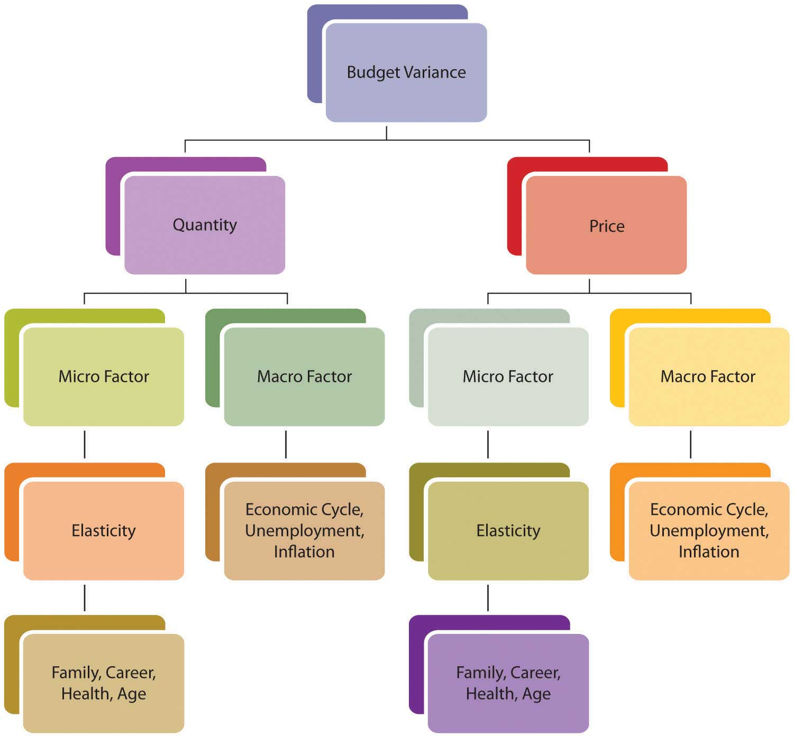After three months, Mark decides to look at his budget variances to make sure he’s on track. His actual results for January–March 2010 are detailed in Figure 5.16 "Mark’s Actual Income and Expenditures, January–March 2010".
Figure 5.16 Mark’s Actual Income and Expenditures, January–March 2010
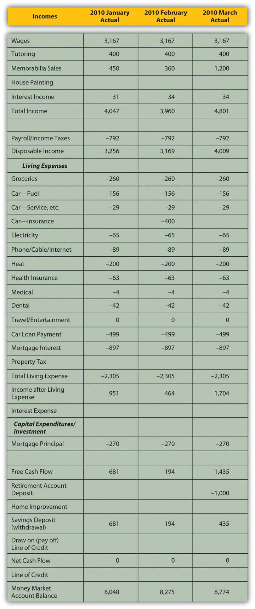How will Mark analyze the budget variances he finds? In Mark’s case, the income variances are positive. He has picked up a couple of tutoring clients who have committed to lessons through the end of the school year in June; this new information can be used to adjust income. His memorabilia business has done well; the volume of sales has not increased, but the memorabilia market seems to be up and prices are better than expected. The memorabilia business is cyclical; economic expansion and increases in disposable incomes enhance that market. Given the volatility of prices in that market, however, and the fact that there has been no increase in the volume of sales (Mark is not doing more business, just more lucrative business), Mark will not make any adjustments going forward. Interest rates have risen; Mark can use that macroeconomic news to adjust his expected interest income.
His expenses are as expected. The only variance is the result of Mark’s decision to cut his travel and entertainment budget for this year (i.e., giving up his vacation) to offset the costs of the roof. He is planning that capital expenditure for October, which (as seen in Figure 5.12 "Mark’s Alternative Cash Budget") will actually make it cheaper to do. His adjusted cash budget is shown in Figure 5.17 "Mark’s Adjusted Cash Budget for 2010".
Figure 5.17 Mark’s Adjusted Cash Budget for 2010
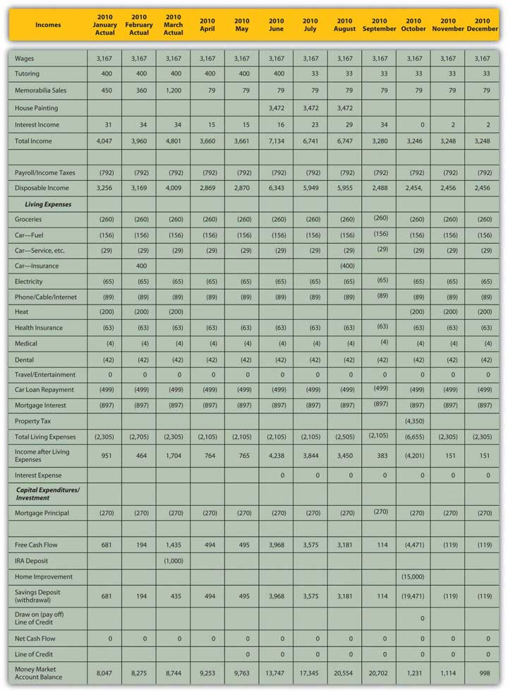With these adjustments, it turns out that Mark can avoid new debt and still support the capital expenditure of the new roof. The increased income that Mark can expect and his decreased expenses (if he can maintain his resolve) can finance the project and still leave him with a bit of savings in his money market account.
This situation bears continued monitoring, however. Some improvements are attributable to Mark’s efforts (cutting back on entertainment expenses, giving up his vacation, cultivating new tutoring clients). But Mark has also benefited from macroeconomic factors that have changed to his advantage (rising interest rates, rising memorabilia prices), and those factors could change again to his disadvantage. He has tried to be conservative about making adjustments going forward, but he should continue to keep a close eye on the situation, especially as he gets closer to making the relatively large capital expenditure in October.
Sometimes a variance cannot be “corrected” or is due to a micro- or macroeconomic factor beyond your control. In that case, you must adjust your expectations to reality. You may need to adjust expected outcomes or even your ultimate goals.
Variances are also measures of the accuracy of your projections; what you learn from them can improve your estimates and your budgeting ability. The unexpected can always occur, but the better you can anticipate what to expect, the more accurate—and useful—your budget process can be.
Recognizing and analyzing variances between actual results and budget expectations
The more frequently the budget is monitored, generally
Budget variances for incomes and expenses should be analyzed to see if they are caused by a difference in
You are working fewer hours, which is reducing your income from employment and causing a budget variance. If the choice is yours, what are some microeconomic factors that could be causing this outcome? If the choice is your employer’s, what are some macroeconomic factors that could be sources of the variance? What are your choices for increasing income? Alternatively, what might you change in your financial behavior, budget, or goals to your improve outcomes?
Whatever type of budget you create, the budget process is one aspect of personal financial planning, a tool to make better financial decisions. Other tools include financial statements, assessments of risk and the time value of money, macroeconomic indicators, and microeconomic or personal factors. The usefulness of these tools is that they provide a clearer view of “what is” and “what is possible.” It puts your current situation and your choices into a larger context, giving you a better way to think about where you are, where you’d like to be, and how to go from here to there.
Mark has to decide whether to go ahead with the new roof. Assuming the house needs a new roof, his decision is really only about his choice of financing. An analysis of Mark’s budget variances has shown that he can actually pay for the roof with the savings in his money market account. This means his goal is more attainable (and less costly) than in his original budget. This favorable outcome is due to his efforts to increase income and reduce expenses and to macroeconomic changes that have been to his advantage. So, Mark can make progress toward his long-term goals of building his asset base. He can continue saving for retirement with deposits to his retirement account and can continue improving his property with a new roof on his house.
Because Mark is financing the roof with the savings from his money market account, he can avoid new debt and thus additional interest expense. He will lose the interest income from his money market account (which is insignificant as it represents only 0.09 percent of his total income), but the increases from his tutoring and sales income will offset the loss. Mark’s income statement will be virtually unaffected by the roof. His cash flow statement will show unchanged operating cash flow, a large capital expenditure, and use of savings.
Mark can finance this increase of asset value (his new roof) with another asset, his money market account. His balance sheet will not change substantially—value will just shift from one asset to another—but the money market account earns income, which the house does not, although there may be a gain in value when the house is sold in the future.
Right now that interest income is insignificant, but since it seems to be a period of rising interest rates, the opportunity cost of forgone interest income could be significant in the future if that account balance were allowed to grow.
Moreover, Mark will be moving value from a very liquid money market account to a not-so-liquid house, decreasing his overall liquidity. Looking ahead, this loss of liquidity could create another opportunity cost: it could narrow his options. Mark’s liquidity will be pretty much depleted by the roof, so future capital expenditures may have to be financed with debt. If interest rates continue to rise, that will make financing future capital expenditures more expensive and perhaps will cause Mark to delay those expenditures or even cancel them.
However, Mark also has a very reliable source of liquidity in his earnings—his paycheck, which can offset this loss. If he can continue to generate free cash flow to add to his savings, he can restore his money market account and his liquidity. Having no dependents makes Mark more able to assume the risk of depleting his liquidity now and relying on his income to restore it later.
The opportunity cost of losing liquidity and interest income will be less than the cost of new debt and new interest expense. That is because interest rates on loans are always higher than interest rates on savings. Banks always charge more than they pay for liquidity. That spreadA difference between two interest rates, quoted in basis points. The most commonly noted spreads are those between Treasury and corporate securities of the same maturity., or difference between those two rates, is the bank’s profit, so the bank’s cost of buying money will always be less than the price it sells for. The added risk and obligation of new debt could also create opportunity cost and make it more difficult to finance future capital expenditures. So financing the capital expenditure with an asset rather than with a liability is less costly both immediately and in the future because it creates fewer obligations and more opportunities, less opportunity cost, and less risk.
The budget and the financial statements allow Mark to project the effects of this financial decision in the larger context of his current financial situation and ultimate financial goals. His understanding of opportunity costs, liquidity, the time value of money, and of personal and macroeconomic factors also helps him evaluate his choices and their consequences. Mark can use this decision and its results to inform his next decisions and his ultimate horizons.
Financial planning is a continuous process of making financial decisions. Financial statements and budgets are ways of summarizing the current situation and projecting the outcomes of choices. Financial statement analysis and budget variance analysis are ways of assessing the effects of choices. Personal factors, economic factors, and the relationships of time, risk, and value affect choices as their dynamics—how they work and bear on decisions—affect outcomes.
Analyze Mark’s budget as a financial planning tool for making decisions in the following situations. In each case, how will other financial planning tools affect Mark’s decisions? For each case, create a new budget showing the projected effects of Mark’s decisions.